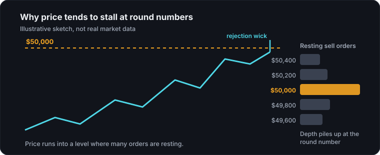

Look back at any BTC chart and you'll notice something odd: price seems to hesitate at $30,000, $50,000, $100,000 — clean, round numbers — far more often than it stalls at $47,312 or $89,650. That's not a coincidence, and it's not magic either.

It starts with where people actually place orders
Most traders set limit orders, stop-losses, and take-profits at round numbers because they're easy to remember and easy to type. Nobody sets a buy order at $42,187.43. They set it at $42,000 or $42,500. When thousands of independent traders round their orders the same way, those levels accumulate real, visible liquidity in the order book — which is exactly what CryptoBolt's order book depth view is showing you.
Not sure how to read the depth view mentioned above? This 48-second guide shows bids, asks and the spread in action.
Why that turns into an actual price reaction
A cluster of resting orders at a round number acts like a wall: buy orders pile up as support, sell orders pile up as resistance. Price arriving at that level has to absorb all of that liquidity before it can keep moving, which is what produces the pause, the wick, or the rejection candle you see on the chart. It's a self-fulfilling pattern — round numbers matter *because* enough people believe round numbers matter and trade accordingly.
Which round numbers matter most
Not every round number carries the same weight. The more people who can see and remember a level, the more orders tend to gather there.
| Level type | Example (BTC) | Why traders watch it |
|---|---|---|
| Major milestone | $100,000 | Headline number, heavy take-profit and sell-limit interest |
| Big round thousand | $60,000 | Easy to type, common for stops and limits |
| Half level | $62,500 | Popular midpoint between two big numbers |
| Minor round | $61,000 | Visible on charts but usually lighter in size |
The examples are illustrative and not a forecast. The same logic applies to ETH at $3,000 or $4,000 and to SOL at $100 or $200: the bigger and cleaner the number, the more likely it is to be a reference point for many traders at once.
A worked example with numbers
Say BTC is at $48,200 and you notice the order book shows 180 BTC of resting sell orders at $50,000, while the next few levels above it hold 15 to 25 BTC each. Buyers have to absorb about 180 BTC at that single price before price can continue. If the buying pressure in the last hour only added up to 60 BTC, price is likely to stall or wick down from the level. If volume keeps rising and 180 BTC is absorbed, those sellers are gone and the book above looks thin, so price can move quickly. The numbers are made up to show the logic: what changes the picture is the size in the book, not the digits $50,000.
Common mistakes
- Treating every round number as a wall. A level with a thin book can be passed with almost no resistance.
- Using it on a one-minute chart. On very short timeframes the level shows up constantly and means little. Daily and weekly levels carry more weight.
- Placing a stop exactly on the level. Many other traders do the same, which is why price often sweeps just past a round number before reversing. Think about where your idea is actually wrong, not just where the number is.
- Ignoring everything else. Trend, funding and sentiment can all point in a different direction from the level.
Levels inside levels
Not every round number is equal. A useful way to think about it is as a hierarchy.
The biggest ones are the thousands and ten-thousands for a coin like Bitcoin, such as $60,000 or $100,000. These attract headlines, large orders and a lot of attention. Next are the half levels, like $62,500 or $57,500, and the hundreds in between. Smaller coins follow the same pattern at a smaller scale, so $1.00 and $0.50 matter for a low-priced token.
Two practical points follow. First, price often reacts a little *before* the exact number, because traders place orders slightly early so they are filled. A resistance at $60,000 may show up as a pause at $59,800. Second, because many stops sit just beyond the number, price sometimes pushes through briefly and then reverses, leaving a wick. Both are tendencies, not rules.
Use round numbers as zones, in the same way you would use any support or resistance level. Place your own stop beyond the zone, not on the number, and decide what you will do if the level fails. The number gives you a place to look. It does not tell you what happens next.
Frequently asked questions
Do round numbers work as support and resistance in crypto?
They often influence where price pauses, but only when there is real order size behind them. It is a tendency, not a rule, and it works best combined with order book depth, volume and the wider trend.
Why does price often wick through a round number and come back?
Stop-losses and breakout orders tend to cluster just beyond a round number. When price reaches that area, those orders trigger and can push price a little past the level before it settles, leaving a wick.
Does this work for altcoins too?
Yes, the same behavior appears wherever many traders use clean numbers. Smaller coins can have thinner books, so a level can be broken more easily and reactions can be sharper.
Is this financial advice?
No. This is educational content. It explains a market behavior and does not tell you what to trade.
The catch
This isn't a standalone signal. A round number with high volume and heavy order book depth behind it is meaningfully different from a round number with a thin book — the level matters because of the liquidity sitting there, not because of the number itself. Treat it as one more piece of context, the same way you'd weigh Fear & Greed or funding rate: informative on its own, more useful stacked with everything else.
How to check it in practice
- Order book: is there visible size sitting at the level, or is the book thin around it?
- Volume: is activity rising as price approaches, or fading?
- Timeframe: does the level stand out on the daily chart, or only on a one-minute chart where it means little?
Where to go next
- Reading the Fear & Greed index: sentiment context to stack with levels.
- Crypto funding rates explained: whether the crowd is leaning one way as price reaches the level.
- Bitcoin price: live BTC/USDT to watch these levels in real time.
- Glossary: support and resistance, order book depth, wick and more.
Check the live order book depth in the terminal →
Myth
Round-number support always holds.
Reality
Levels get absorbed all the time. If buyers run out, price goes through and the cluster is gone.
Quick check
Why do round numbers sometimes act as support or resistance?